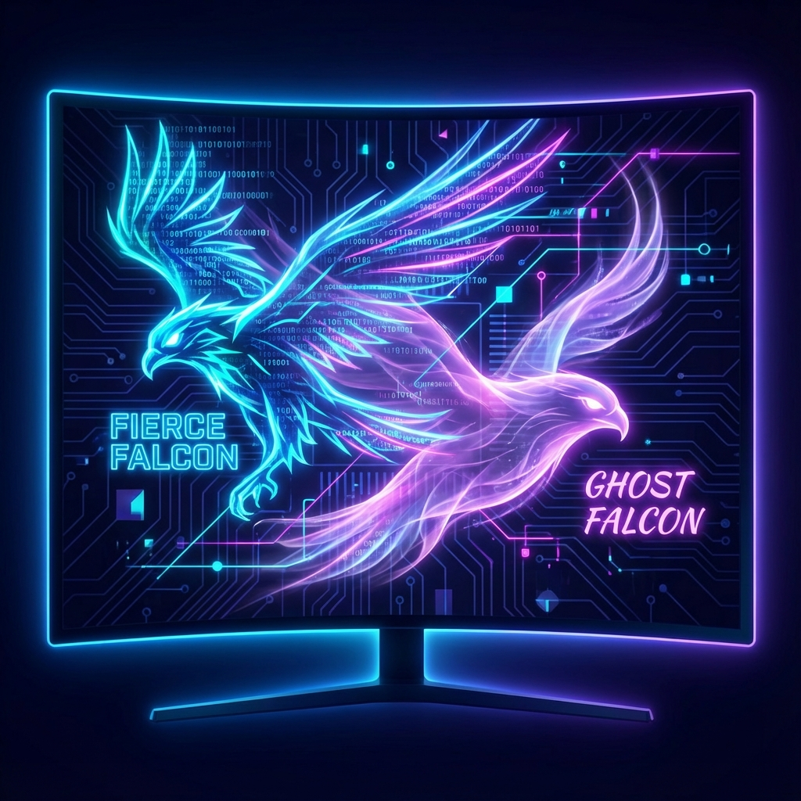

Tady je ověřený přehled toho, co se (dnes) ví o Gemini 3.5 – a zároveň trochu realističtější obraz toho, co je hype a co potvrzené info.

🔎 Nejdůležitější aktuální informace
Google oficiálně neohlásil model "Gemini 3.5" jako produkt (tak jako to třeba udělal s Gemini 3 a 3 Pro v listopadu 2025). To, co koluje jako „leak“ a „Nejlepší model vůbec!“, jsou útržkovité technické náznaky nebo spekulace, ne oficiální potvrzené detaily.
🔍 Co se testuje a proč to někdo nazývá Gemini 3.5
Na některých komunitních serverech a sociálních sítích se objevily útržky informací o tom, že Google testuje nové varianty Gemini (označované jako 3.5).
- Interní verze: Modely přezdívané Fierce Falcon a Ghost Falcon, které se zaměřují na rychlost vs. kreativitu při generování UI, her či kódu.
- Kontextové okno: Existují i neoficiální zmínky o velkém kontextovém okně (např. ~2,1 M tokenů), které by u hypotetického „Gemini 3.5“ dramaticky předčilo současné modely, pokud by to byla pravda.
⚠️ Realita vs. Úniky
Problém je ten, že tohle není potvrzený oficiální produkt ani roadmapa – jen úniky nebo komentáře z online fór, LinkedIn kontaktů nebo anonymních zdrojů. Takové věci se často ukážou jako nepřesné, nebo až příliš idealistické.
📌 Co Google oficiálně udělal
Google v listopadu 2025 oznámil Gemini 3 a Gemini 3 Pro jako své aktuálně nejvýkonnější modely.
- Gemini 3 Pro: Multimodální model s výkonným reasoningem (schopností hlubšího rozumění) a dlouhým kontextem, dostupný ve své aplikaci a v Google Cloud Vertex AI.
- Deep Think: Modely jako Deep Think zvyšují výkon při komplexních úlohách.
Oficiální roadmapa ale Gemini 3.5 zatím neobsahuje.
🪩 Proč koluje hype a fámy
Na X, TikToku či YouTube se teď titulky jako „Google’s Greatest Model Ever – fastest, cheapest & most powerful!“ objevují kvůli videím s velkými proklamacemi, které ale neodkazují na oficiální údaje. Taková videa často míchají:
- Interní testovací buildy, které nikdy veřejně nevydají.
- Extrapolace z benchmarků (např. velikost kontextového okna).
- Názory tvůrců obsahu bez oficiálních dat.
🧠 Jak to srovnat s realitou konkurence
V průmyslu opravdu probíhá masivní závod o výkon – OpenAI například narychlo vydala GPT-5.2 jako reakci na tlak z Gemini 3. To znamená, že Google i OpenAI tlačí výkon, ale není pravda, že by Gemini 3.5 byla potvrzená jako produkt nebo že by se na trh dostala dřív než je v roadmapě.
🧩 Co z toho vyplývá pragmaticky
Pozor na titulky typu „Gemini 3.5 = největší model vůbec“. Teď oficiálně existují Gemini 3 a 3 Pro – a Gemini 3.5 je spíš neoficiální leak nebo experimentální sestava v testovacím prostředí.
Docela realisticky: může to být interní vývojová větev, kterou Google nikdy veřejně neuvolní, stejně jako se to stalo v historii s jinými AI projekty.